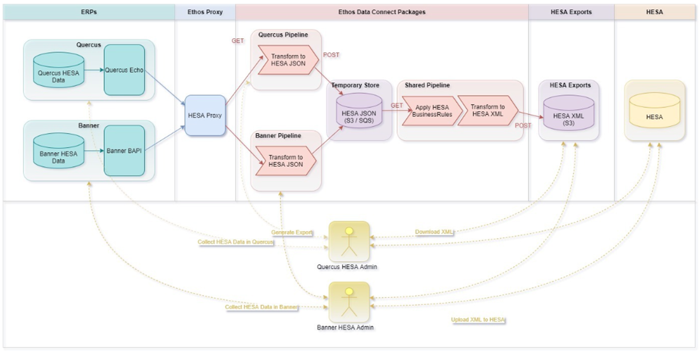
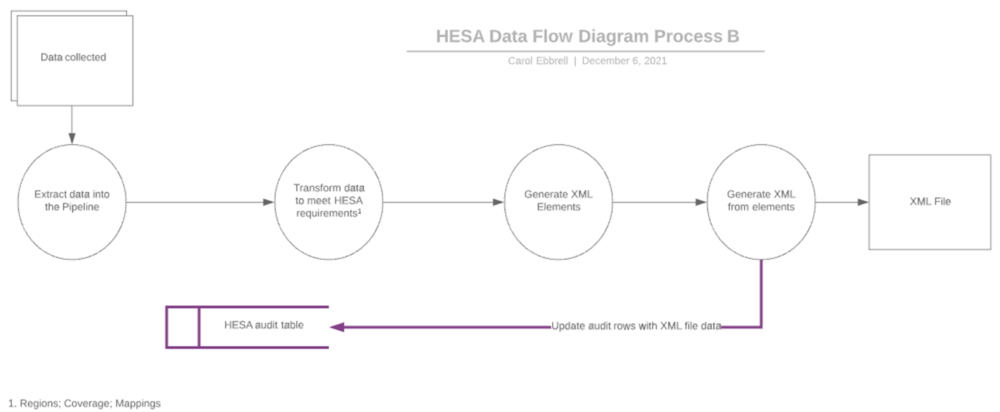
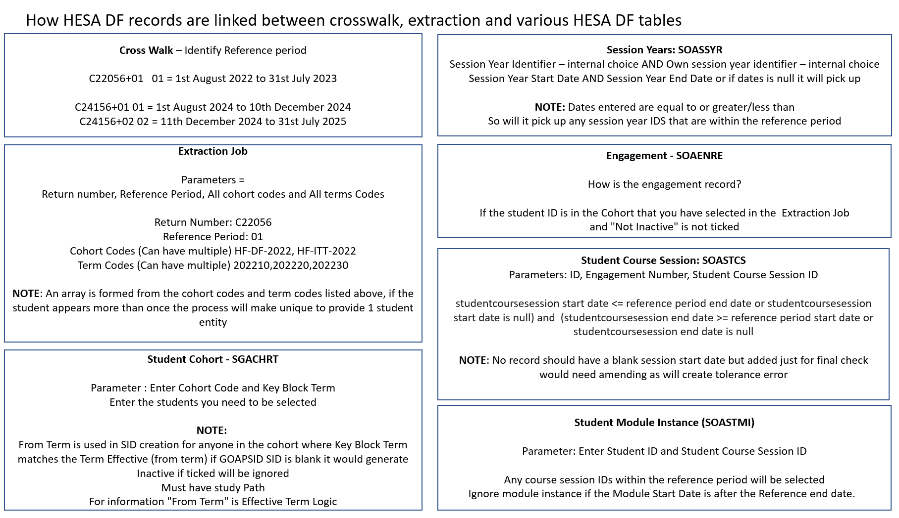

HESA Data Futures
The Data Futures functionality is built to support Banner HESA.
The term 'course' is used to mean different things in Banner and in HESA. To distinguish terminology, in this use content, the term 'HESA course' refers to a 'Banner programme record. The term HESA module refers to a Banner course record.
- Funding
- Publications (including UNISTATS)
- League tables
The Data Futures programme brings the requirements of two existing data collections: student record and student alternative record (previously known as the Alternative provider student record) into a new student data collection specification. The new data specification has been a product of extensive work with Statutory Customers, HE Providers and sector bodies. The data specification needs to flex and adapt to the future requirements of a dynamic policy environment and therefore will require changes to be made. The collection specification of Data Futures has been structured in a way to ensure that these changes are not fundamental. An iterative schedule of releases will allow for modifications to be made, at regularly periods.
The Student record is collected in respect of all students registered at the reporting provider who follow courses that lead to the award of a qualification or provider credit. The emphasis of the coverage of the Student record is those who are (or were) actively following a course at some time during the applicable reference period.
To know about the physical data model, see the 56_Data_Model_f_22_6dfcdb3dc0.pdf file that is available as an attachment in the .zip compressed file.
Ellucian has converted the HESA DF model to provide a working student records system to enable the production of the new data model. This new functionality uses Data Connect to facilitate the extraction of data from tables to an XML format.
The following model for HESA data futures is available for institutions (downloaded 19th January 2023) This uses data connect and a suite of new data futures tables.
Process Map - HESA DF Data Connect

Process Map - HESA DF Extraction

Configure and connect HESA Data Futures in Ethos Integration
Create Banner application in Ethos Integration for HESA Data Futures
Create proxy application in Ethos Integration for HESA Data Futures
The application record contains basic information about HESA Data Futures Extraction process and how it interacts with Banner through Ethos Integration.
Before you begin
About this task
- Ethos applications for the Banner Business API, Banner Student API, and Banner Integration API, which is part of setting up Banner in Ethos Integration.
- An Ethos application for HESA Data Futures Extraction process, which you will create using the procedure mentioned in the following step-by-step procedure.
Procedure
-
On the Ethos Integration header bar, click the gear button
 and select the Ethos environment where you want to perform this procedure.
and select the Ethos environment where you want to perform this procedure.
- On the Ethos Integration header bar, click Applications.
- On the Applications page, click Add Application.
-
In the Add Application dialog box, do the following:
- Select Manually.
- Select Configure REST API proxy.
- Click Continue.
-
On the Application Details page of the wizard, enter the information described below and click Next.
Field Entry Application name Enter a unique name for this application. Example name:
HESA DF Business API proxy/HESA DF Integration API proxy/HESA DF Student API ProxyEnsure that the name uniquely identifies this application.
When you need to select an application elsewhere in the Ethos Integration user interface, you will use the name to select the correct application.
Description (Optional) Enter a description of this application. -
In the Add Source Applications page of the wizard, set up proxy API requests:
- Click View Application if you are ready to configure app-specific settings, or click Back to Applications if you want to just create the app now and configure settings later.
Create Banner user for proxy API requests
Create crosswalk to map Banner HESA Reference Period
The hesaReferencePeriod crosswalk maps the HESA Student Return Number and HESA Reference Period to student course session/session year start date and end date.
Procedure
-
On the Ethos Integration header bar, click the gear button and select the Ethos environment where you want to perform this procedure.
Create crosswalk to map SLC installation
The slcInstalled crosswalk identifies whether the system has the Banner Student Loans Company (SLC) is installed in the system.
About this task
Even when it is Y, first checks the GOAPSID SSN value, if it is not null then the GOAPSID value is considered, if it is null then the RKASSLC value is considered. Also on entering Y, you should mention the SLC finaid year concatenated with comma ex: Y,2023. So that it fetches the SSN value from RKASSLC for that finaid year active record. Plus to provide an override in the GOAPSID if no SSN should be sent but one is valid in RKASSLC page if the client enters X in GOAPSID SSN (no tags) will be displayed in XML.
Procedure
-
On the Ethos Integration header bar, click the gear button and select the Ethos environment where you want to perform this procedure.
Create crosswalk for ofsRegister
The Module and the Module Instance entities are included in the Student record (056) HESA Data Futures Return, based on the ofsRegister value in Ethos Integration Crosswalk.
About this task
Procedure
-
On the Ethos Integration header bar, click the gear button and select the Ethos environment where you want to perform this procedure.
Create crosswalk for moduleOutcomeEngland
The moduleOutcomeEngland crosswalk provides England providers an option to show or hide the Module Outcome data in XML.
About this task
Procedure
-
On the Ethos Integration header bar, click the gear button and select the Ethos environment where you want to perform this procedure.
- On the Ethos Integration header bar, click Packages.
- On the Packages page, click Crosswalks.
- Click Add to create a new crosswalk.
- In the Add new Crosswalk dialog box, enter moduleOutcomeEngland and then click Create.
-
In Default Target Value and Target Value, enter Y or N.
Valid Values Description Y Providers in England that are registered with the Office for Students in the Approved (fee cap) category who want to return optional Module Outcome data. N Providers in England that are registered with the Office for Students in the Approved (fee cap) category who do not want to return optional Module Outcome data. - Click Save.
Create crosswalk for c24056 session year
The c24056Sessionyear crosswalk is available for providers in the E, W, NI, and S regions. This crosswalk allows institutions to determine whether the providers can include Session year entity and Session year ID under the Student Course session fields in the return files for the 2024 return year.
About this task
Procedure
-
On the Ethos Integration header bar, click the gear button and select the Ethos environment where you want to perform this procedure.
Set up automatic processing of applications
Set up the pipeline jobs in Ethos Integration.
Set up the pipeline job to extract JSON data
Run HESADFExtraction job that downloads the raw student data futures data as a JSON file before coverage rules applied for the given job parameters.
About this task
HESADFExtraction job to download new JSON file job to run on a schedule to periodically extract raw JSON file.Procedure
-
On the Ethos Integration header bar, click the gear button and select the Ethos environment where you want to perform this procedure.
Set up the pipeline job to extract XML data
Run the HESADFReport job that download the final student data futures data as a XML file with coverage rules applied for the given HESADFExtraction job run ID.
About this task
HESADFReport job to run on a schedule to periodically extract final XML file.Procedure
-
On the Ethos Integration header bar, click the gear button and select the Ethos environment where you want to perform this procedure.
Data Futures tables
List of tables available for the Data Futures feature.
| Table Names | Description |
|---|---|
| SOBITED | Initial Teacher Training Data Feature Entry Details table. |
| SORENPD | Previous Degrees Details For Initial Teacher Training Students table |
| SORPCIT | Program Course Details For Initial Teacher Training Students table |
| SORPCDE | HESA course details that the student is engaged with. |
| SORPCDI | Initiative details associated with a HESA course. |
| SORPCRI | Course reference information associated with a HESA course. |
| SORPCDR | Role information that an organization has in the associated HESA course. |
| SORPCCA | Information about the accreditation that a Professional Statutory or Regulatory Body (PSRB) provides. |
| SOBCCID | Details of Modules and their association with a Course Catalog. |
| SORCCDC | Cost centre and its details associated with a module. |
| SORCCDR | Organisations that are involved in the delivery role of a module. |
| SORCCMS | Subject(s) associated with modules. |
| SORQUAL | Information about a formally recognised academic award, such as a degree, diploma or certificate. |
| SORAWBR | Information about the body whose degree awarding power underpin the Qualification. |
| SORQUSB | Information about the subject of the Qualification. |
| SORSSYR | Session year details of a HESA course. |
| GORPSID | Person Social Economic Identity Details. |
| SPBPERS | Basic Person Base Table |
| SPRIDEN | Person Identification/Name Repeating Table |
| RKRSSLC | SLC SSAR and SSAC repeating table. |
| GTVSEID | Social Economic Identity Codes. |
| SORLANP | Language proficiency details of the student. |
| SOBENGA | A coherent engagement that a student makes with a provider aiming towards the award of qualification(s) or credit. |
| SOBENCP | Information regarding the Engagements that are part of a collaborative provision arrangement with an overseas provider, or the arrangement of the Engagements that are to provide doctoral research training. |
| SORENEP | Entry profile details of an Engagement. |
| SOBRELV | The details of a student leaving an Engagement. |
| SOBREQA | The information related to a qualification a student has achieved. |
| SOBRQAA | Accreditations that the student has achieved upon achieving their qualification. |
| SOBSCAA | The student accreditation aim details of an Engagement. |
| SOBRESI | The student initiative details associated with the Engagement. |
| SOBSCFT | The full time equivalence for students for every reference period in a Student Course Session. |
| SOBSCSS | The details of the status of the Student Course Session. |
| SOBSCFS | The information in relation to specific receipt of a financial support of a student. |
| SOBSCSL | Study location details for the Course Session. |
| SOBSCSA | Data on the supervisor(s) of doctoral research students |
| SORENTQ | Qualifications held by the student on entry to their Engagement. |
| SORENTS | Subjects associated with an entry qualification for a student. |
| SOBSTMI | Specific engagement of a student with a Module and the Module Outcome. |
| SORVENU | Program delivery venue location details. |
| SOBSTCS | SOBSTCS Details of Student Course Session for a specific student activity for a HESA course. |
| SOBSCFM | The key data required by regulatory or funding bodies. |
| SOBSCFB | SOBSCFB The body or bodies that are responsible for allocating funding for a fundable Student Course Session. |
| SOBMOVA | The details of an activity of a student not at the venue(s) of provider or partners. |
| SOBSCFT | The full time equivalence for students for every reference period in a Student Course Session. |
| SOBSCSS | The details of the status of the Student Course Session. |
| SOBSCFS | The information in relation to specific receipt of a financial support of a student. |
| SOBSCSL | Study location details for the Course Session. |
| SOBSCSA | Data on the supervisor(s) of doctoral research students. |
List of HESA Entity tables associated to Banner Data Futures table list
| HESA Entity | Banner DF Table |
|---|---|
| Student Cohort | SGACHRT |
| Session Year | SOASSYR |
| Engagement (includes on entry profile and final qualification awarded) | SOAENRE |
| Engagement On-Entry Qualifications | SOAENTQ |
| Language Proficiency Details | SOALANP |
| Student Course Session | SOASTCS |
| Student Module Instance | SOASTMI |
| HESA Courses | SOAPCDE |
| HESA Modules | SOACCID |
| HESA Qualifications | SOAQUAL |
| HESA Venues | SOAVENU |
Data Futures processes
Banner HESA Data Futures includes a few processes to populate the HESA related data.
HESA Data Futures record processing
The following chart explains the links between HESA reference periods and selecting records.

Populate Student Identifier (SOPHUDF) process
The SOPHUDF process (HESA Data Futures SIDs) allow institutions to populate the new HESA Data Futures student identifier (SID) details into the GORPSID table.
- First 2 digits: Year of entry into provider (last 2 digits of year)
- Next 8 digits: Provider's UKPRN
- Next 6 digits: Internal 6 digits is fetched from SPRIDEN_ID
- Last digit: Check digit
The .log and .lis files provide the summary of the successfully processed records. The files also include any errors during the process generation.
| Parameter Name | Required? | Description | Values |
|---|---|---|---|
| Cohort Code | Yes | Enter the cohort code to fetch the selected population | Cohort Code Validation (STVCHRT) page |
| Term Code | Yes | Enter the term code of the Cohort | Term Code Validation (STVTERM) page |
Populate Engagement Details (SOPSPDF) process
The SOPSPDF process allows institutions to populate the engagement details (Student ID and Study Path) that is available in the SGACHRT page into the SOBENGA table. This process links data connect, crosswalks, cohorts and the HESA Data Futures tables.
When you create a new study path, the SOKDTFU trigger populates the Engagement number (NUMHUS) in the SOBENGA table for all HESA institutions. Ensure that you run the script into the GURLCIN table to indicate the HESA institution. Only after the generation of NUMHUS, you can access the SOAENRE page from the Key block.
For existing students:
When the student gets a new study path, the institution creates the HESA engagement record for the students to maintain the engagement details of students. The SOPSPDF process fetches all the existing Student IDs and the associated Study Path numbers that the SGACHRT page maintains and creates the engagement record if it doesn't exist.
The SOPSPDF accepts Cohort Code and Term Code as input parameters, and fetches all the Student IDs and the associated Study Path numbers that the SGACHRT page maintains. Institutions should populate the Study path details in the SGACHRT page before running the SOPSPDF process.
The process then validates the information by checking if the Study Path number is present in the SGRSTSP table for the student. If available, the process inserts the Student ID and Study Path number to the SOBENGA table.
The .log and .lis files provide the summary of the successfully processed records. The files also include any errors during the process generation.
| Parameter Name | Required? | Description | Values |
|---|---|---|---|
| Cohort Code | Yes | Enter the cohort code to fetch the selected population | Cohort Code Validation (STVCHRT) page |
| Term Code | Yes | Enter the term code of the Cohort | Term Code Validation (STVTERM) page |
Update Return to Regulator (SOURRDF) process
The SOURRDF process allow institutions to populate the Return to Regulator indicator in various HESA pages. The indicator controls the data that the system reports through HESA Data Futures.
The SOURRDF process accepts the multiple cohort code, multiple term code, Reference Start Date, and Reference End Date as input parameters and fetches all the active Student IDs from the SGACHRT page for the cohort and term code combination.
The system updates the Module, Course, Session, Venue, and Qualification Return to Regulator values based on the Course Session details that comes from the SOASTCS page. The SOASTCS page fetches data for a given student and engagement number where the Course ID is present and the data is within the reference period range.
| Parameter Name | Required? | Description | Values |
|---|---|---|---|
| Cohort Code | Yes | Enter the cohort code to fetch the selected population. | Cohort Code Validation (STVCHRT) page |
| Term Code | Yes | Enter the term code of the Cohort. | Term Code Validation (STVTERM) page |
| Reference Start Date | Yes | Enter reference period start date. | Date |
| Reference End Date | Yes | Enter reference period end date. | Date |
Remove Duplicate SID From XML (SOPMSDF) process
The SOPMSDF process allows you to remove the duplicate SIDs and merges the OWNSTUs from given input. XML file for all records having duplicate SIDs. You can also sort the XML file as per the SID values.
The process parameters are:
| Parameter Name | Required? | Description | Values |
|---|---|---|---|
| Path of the file | Yes | Enter the Oracle directory name that contains the file | N/A |
| Input file name | Yes | Name of the .XML file | N/A |
| Output file name | Yes | File which stores the output at the given Input file path. | N/A |
| SID sorting (Y/N) | No | To store the Y or N values | Y: Sort the XML as per the SID value N: Do not sort the XML as per the SID value |
- Import the seed data file to the input file path directory and copy the input file name and file path.
- Create the seed data in the .XML format only.
- Enter the Oracle directory name, input file name and output file name attribute. The process parses the data from the .XML file and after performing logic operations the output file will be generated which can be downloaded from the given input file path directory.
- The system generates messages in the .LOG file for you to view.
- Input file and output file should be .XML file type only.
- Input file path directory should have write permissions to generate output file.
Tasks
This chapter discusses the tasks that you can perform using the pages delivered for the Data Futures functionality.
Record planned course session years
Steps to record the planned course session years that a provider offers.
Procedure
- Access the Session Year Details (SOASSYR) page.
- In the main page, enter the session details for the planned course years.
- Save your record.
Maintain HESA course details
Steps to create and maintain HESA course details.
Create new courses
Steps to create new courses.
Procedure
Copy data from existing course delivery
Use the following steps to create a new Delivery ID by copying data from an existing course delivery.
Procedure
Update and view data for existing course deliveries
Use the following steps to update and view data for the existing course deliveries.
Procedure
- Access the Course Delivery Details (SOAPCDE) page.
- In the Key block, select the ID from the Course ID field.
- Click Go.
- View or update the course details as desired.
- If you happen to update any record, click Save to save retain your changes.
Maintain HESA Modules through course catalog identifier details
Steps to create and maintain HESA modules through course catalog identifier details for HESA Modules Entity.
Create course catalog identifier details
Steps to create a course catalog identifier details for a student.
Procedure
Copy data from existing course catalog identifier
Steps to create a new Module ID by copying data from an existing course catalog identifier.
Procedure
Create venue details
Use the following step-by-step procedure to create venue details. This information will be used in the Delivery Venue block on the Course Delivery Details (SOAPCDE) page.
Procedure
Create and maintain Bio-demo information
Create and maintain a student's Bio-demo information.
| Page name | Purpose |
|---|---|
| Social Economic Identity Report (GTVSEIR) page | Defines a social economic identity report code. Use the following report codes to associate the respective identity codes with the respective regions.
|
| Social Economic Identity Code (GTVSEID) page | Creates social economic identity codes. |
| Social Economic Identity Rules (GOASEID) page | Defines a list of values and associates them to attributes of a social economic identity code defined on the Social Economic Identity Code (GTVSEID) page. |
| Social Economic Identity Report Template (GOASETP) page | Maps the social economic identity codes created on the Social Economic Identity Code (GTVSEID) page to a report code on the Social Economic Identity Report (GTVSEIR) page. Also, defines the social economic identity codes that appear on a report. |
| Person Social Economic Identity Details (GOAPSID) page | Stores and maintains the social economic identity details of a person for a report. Institutions can select their respective report codes depending upon the regions that they are located. |
Institutions will receive some Bio-demo information and Entry Qualification through UCAS using the *J file. To know more about importing the *J through UCAS, see HESA Data Futures Impact section available in Banner UCAS Use content.
- The GOAPSID page
- Ethnicity, Marital Status, Religion, Gender Designation values from the SPAPERS page
- Disability Type from the GOAMEDI page
Refer to the Banner General Reference and Banner General Use to learn more about the Bio-demo functionality.
Record student's language proficiency details
Steps to record a student's language proficiency details. The SOALANP page is available as a part of Banner Student release and this information is listed as a part of HESA content for reference.
Procedure
Record HESA course qualification details
Use the following step-by-step procedure to enter and record the information about a formally recognized academic award, such as a degree, diploma, or a certificate.
About this task
For every Qualification ID entered, you must add at least one qualification subject in this page. You can have zero or more entries in the AWARDING BODY ROLE block. Qualification IDs created in this page will be used in the Course Delivery block of the Course Delivery Details (SOAPCDE) page.
Procedure
Record student engagement details
Steps to maintain a student's engagement details.
Before you begin
For new students:
When you create a new study path, the SOKDTFU trigger populates the Engagement Number (NUMHUS) in the SOBENGA table for all HESA institutions. Ensure that you run the script into the GURLCIN table to indicate the HESA institution. Only after the generation of NUMHUS, you can access the SOAENRE page from the Key block.
For existing students:
When the student gets a new study path, the institution creates the HESA engagement record for the students to maintain student's engagement details. The SOPSPDF process fetches all the existing Student IDs and the associated Study Path numbers that the SGACHRT page maintains and creates the engagement record if the engagement record does not exist.
Procedure
- Access the Engagement and Registration (SOAENRE) page.
- In the Key block, specify the Student ID and Engagement ID.
- In the Engagement window, enter the engagement details that a student makes with a provider aiming towards the award of qualification(s) or credit.
- In the Entry Profile window, record the information that relates to the student as at the start of their engagement.
- In the Qualification Awarded window, record the qualification(s) obtained by the student following the completion on the student's engagement.
- Save the record.
Record student entry qualification
Steps to record the qualification(s) held by the student on entry to their engagement.
Procedure
Create student course session
Steps to create a student's course session.
Procedure
- Access the Student Course Session (SOASTCS) page.
- In the Key block, enter/select the student ID from the ID field.
- Enter/select the engagement number from the Engagement Number field.
- In the Student Course Session ID field, either click the + button to create your own student course session IDs or enter/select an existing student course session ID.
-
In the Base section, enter the following student course session details:
- Student Course Session
- Funding and Monitoring
- Funding Body
- Off Venue Activity
- Reference Period Student Load
- Session Status
- Student Financial Support
- Study Location
- Supervisor Allocation
- Save the record.
Record student module instance
Steps to create and record a student's module instance detail.
Procedure
- Access the Student Module Instance (SOASTMI) page.
- In the Key block, specify the student details for which you want the module instance to be recorded.
- In the Base block, enter the student's module instance details.
- Save your record.